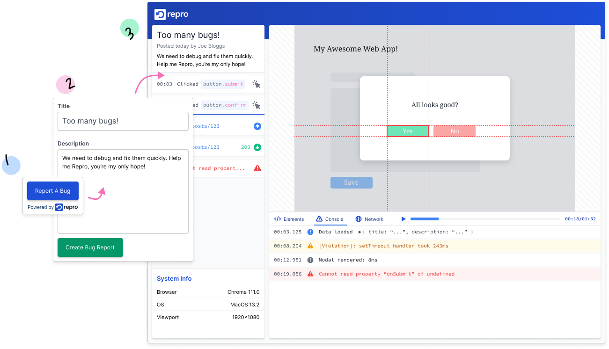

Reproduce and
fix bugs, fast.
The open-source developer tool for replayable bug reports.
Debug faster and ship defect-free software to your users.

Rewind, Replay, Inspect
We're building the tools to supercharge your debugging experience.
Session recording
Rewind and replay bugs easily with instant session recording. Capture every click and key press.
Console logs & errors
Replay logs, warnings and errors, with stack traces to understand when and why errors are thrown.
Network requests
Capture and review network requests, responses and headers.
DOM, styling & layout
View changes to the DOM and styling over time, using a replayable element inspector.